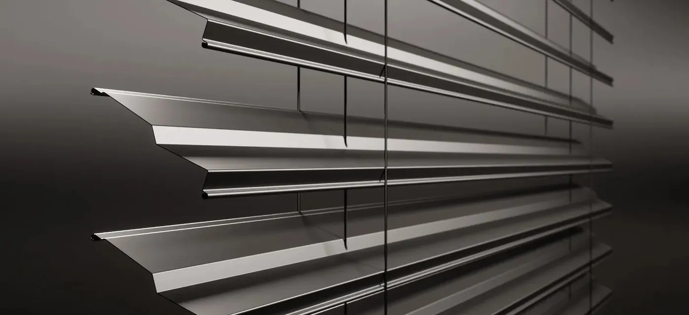
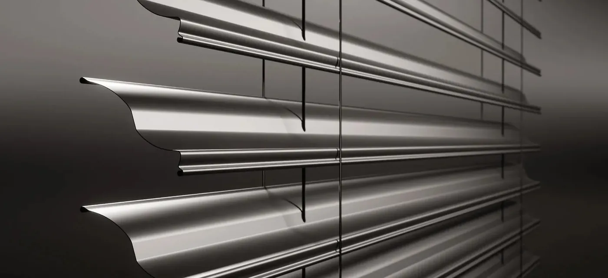
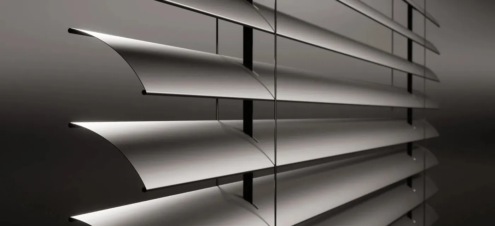

Raffstore und Außenjalousien
Verstellbare Aluminium-Lamellen statt starrem Auf und Zu: Raffstore lenken Tageslicht in den Raum, halten Hitze und Blicke draußen – und lassen den Ausblick trotzdem bestehen. Wir liefern Raffstore in mehreren Lamellenprofilen und Montagearten – passend zur Fassade und zur Einbausituation.
Raffstore oder Rollladen – was ist der Unterschied?
Beide schützen vor Sonne, Blicken und teilweise vor Wind – aber sie funktionieren grundlegend anders und eignen sich für unterschiedliche Räume.
Lichtlenkung statt Verdunkelung
Die einzelnen Lamellen lassen sich nicht nur hoch- und herunterfahren, sondern auch im Neigungswinkel verstellen. So bleibt der Raum hell, während direkte Sonneneinstrahlung und Blicke von außen draußen bleiben – der Ausblick nach draußen bleibt trotzdem erhalten. Ideal für Wohn- und Essbereiche mit großen Fensterfronten, in denen Tageslicht gewünscht ist.
Kompletter Licht- und Sichtabschluss
Ein Rollladen wird vollständig heruntergefahren und dunkelt den Raum komplett ab. Dafür bietet er die bessere Wärmedämmung, den stärkeren Schallschutz und einen robusteren mechanischen Einbruchschutz – meist auch günstiger in der Anschaffung. Die bessere Wahl für Schlafräume oder wenn maximale Dämmung im Vordergrund steht.
Ja – viele unserer Kunden setzen im Wohn- und Essbereich auf Raffstore für Lichtlenkung und Ausblick, und im Schlafbereich auf Rollläden für vollständige Verdunkelung und maximalen Wärme- und Einbruchschutz. Mehr zu unseren Rollladensystemen finden Sie auf der Rollläden-Seite.
Z90, S90 oder C80 – welches Profil passt?
Wir bieten Raffstore in drei Lamellenprofilen an. Alle bestehen aus witterungsbeständigem Aluminium, unterscheiden sich aber in Form, Lichtstreuung und Laufruhe.

Z90
Z-förmiges Profil, 90 mm Lamellenbreite. Gummidichtungen zwischen den Lamellen sorgen für einen deutlich leiseren Lauf, gebördelte Kanten für mehr Stabilität bei starkem Wind.

S90
S-förmiges Profil, 90 mm Breite. Die Lamellen greifen optimal ineinander und streuen Licht weicher – für eine angenehmere Raumausleuchtung. Geringere Stapelhöhe beim Einfahren als Z90.

C80
Das bewährte C-förmige Vorgängerprofil mit 80 mm Breite. Solide Grundausstattung für alle, die ein etwas kleineres Budget haben, aber nicht auf Qualität verzichten möchten.
Aufsatz- oder Vorbauraffstore?
Wie schon bei unseren Rollläden entscheidet auch hier vor allem der Bauzustand, welches System sinnvoll ist.
Aufsatzraffstore
Wird direkt auf dem Fensterrahmen montiert und gemeinsam mit dem Fenster eingebaut. Der Kasten verschwindet anschließend vollständig unter Putz und ist von außen nicht sichtbar – die unauffälligste Lösung, aber nur sinnvoll planbar, solange die Fenster noch nicht gesetzt sind.
- Kastenmaße260×275 / 300×308 mm
- Kastenmaße365×308 / 425×308 mm
- OptikKasten unsichtbar verputzt
Vorbauraffstore
Wird außen auf der Fassade montiert, unabhängig vom Fenster – ideal, wenn die Fenster bereits stehen und nicht getauscht werden sollen. Der Kasten bleibt sichtbar, lässt sich aber farblich auf Fenster und Fassade abstimmen.
- ModelleZF-A 240 / ZF-A 300
- Montageohne Umbau, an der Fassade
- EignungNachrüstung im Bestand
Komfort, Technik & Steuerung
Die wichtigsten Merkmale im Überblick – verbindlich festgelegt wird die Konfiguration in Ihrem Angebot.
Mit Überlastschutz und Hinderniserkennung für sicheren Betrieb.
Fahren die Lamellen bei starkem Wind automatisch in Schutzposition.
Zeit- und Gruppensteuerung, automatisches Ein- und Ausfahren.
Im Winter früh herunterfahren gegen Wärmeverlust, im Sommer automatisch gegen Aufheizung.
Wartungsarm und langlebig, durchgehend aus Aluminium gefertigt.
Kasten, Führungsschienen und Lamellen passend zu Fenstern und Fassade.
Was Sie über Raffstore wissen sollten
Der Unterschied liegt im Licht. Ein Rollladen verdunkelt vollständig und schützt zusätzlich vor Einbruch und Kälte. Ein Raffstore hält die Sonne draußen, lässt über die verstellbaren Lamellen aber weiterhin Tageslicht herein und erhält den Blick nach draußen. Wer vor allem Hitze aussperren will, ohne im Dunkeln zu sitzen, fährt mit dem Raffstore besser – wer verdunkeln und absichern möchte, mit dem Rollladen.
Ja – das ist der zentrale Vorteil gegenüber dem Rollladen. Je nach Lamellenneigung bleibt der Blick nach außen erhalten, während direkte Sonne und neugierige Blicke abgehalten werden.
Nur begrenzt. Die stabilen Aluminiumlamellen erschweren Einblick und spontanen Zugriff, ersetzen aber keinen zertifizierten RC-Widerstand. Wer gezielten Einbruchschutz möchte, ist mit einem Rollladen oder unseren Sicherheitsfenstern besser beraten.
Mit optionalem Windwächter fahren die Lamellen bei zu hohen Windgeschwindigkeiten automatisch in eine sichere Position, um Beschädigungen zu vermeiden. Bei sehr exponierten Lagen beraten wir zur passenden Führungsart.
Entscheidend sind Größe und Anzahl der Elemente, der Glasaufbau, die Farbe (weiß ist günstiger als folierte oder lackierte Ausführungen), die Beschlag- und Sicherheitsausstattung sowie die Einbausituation vor Ort. Pauschalpreise aus dem Internet sagen deshalb wenig aus. Wir messen kostenlos auf und erstellen Ihnen ein verbindliches Festpreisangebot inklusive Montage und Entsorgung der Altelemente.
Ja, über das Vorbausystem: Wir montieren es unabhängig vom Fenster an der Fassade. Damit eignet es sich besonders für die Sanierung im Bestand – Ihre vorhandenen Fenster können bleiben.
Raffstore für Ihr Projekt anfragen
Wir beraten Sie unverbindlich, welches Profil und welche Montageart zu Ihrem Objekt passt. Beratung und Aufmaß finden bei Ihnen statt, in Isernhagen und der Region Hannover.
Angebot anfragen